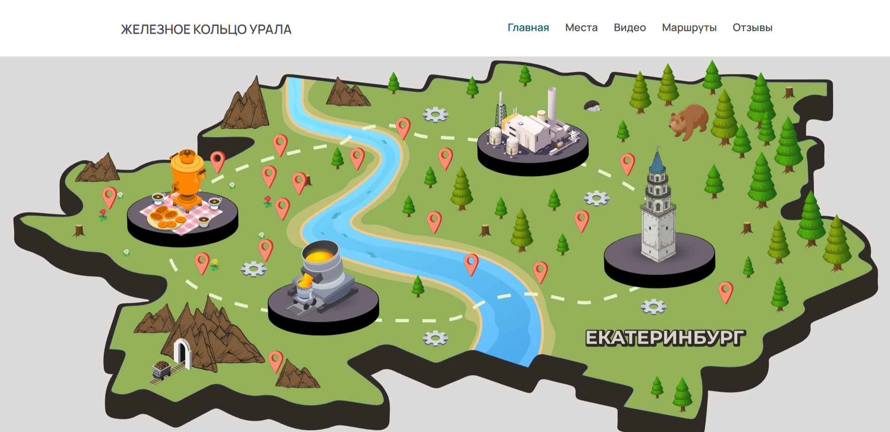
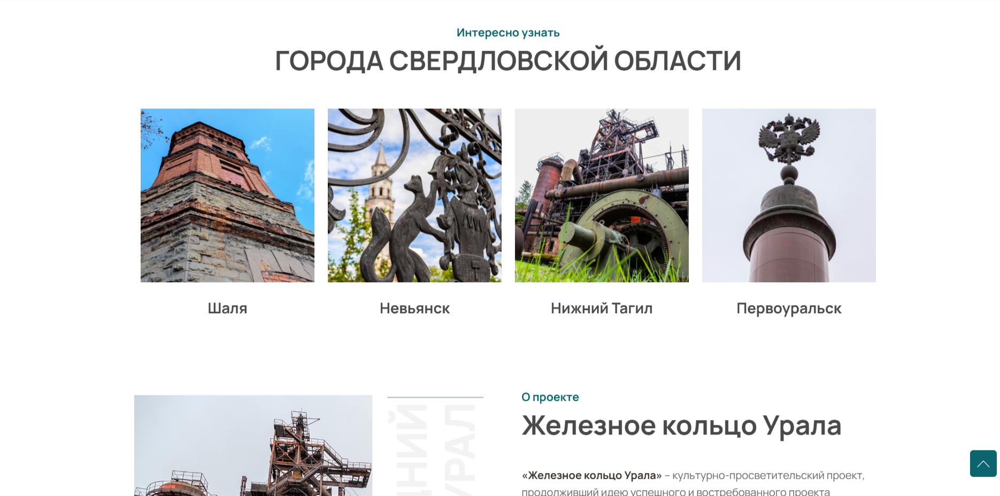
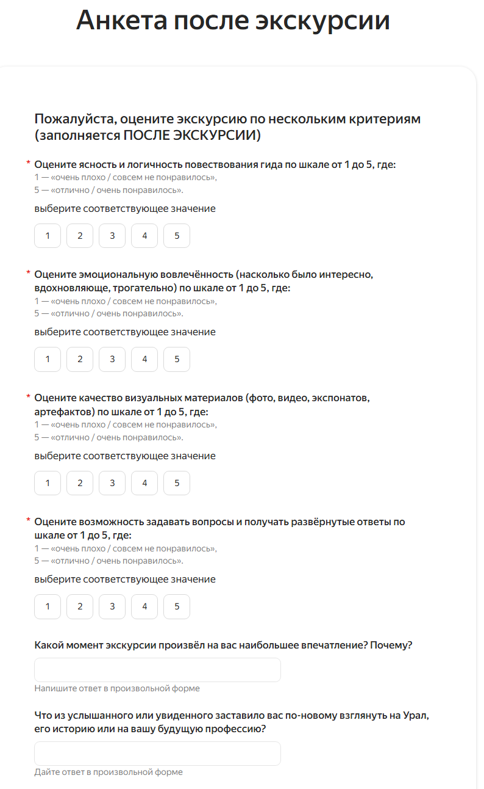
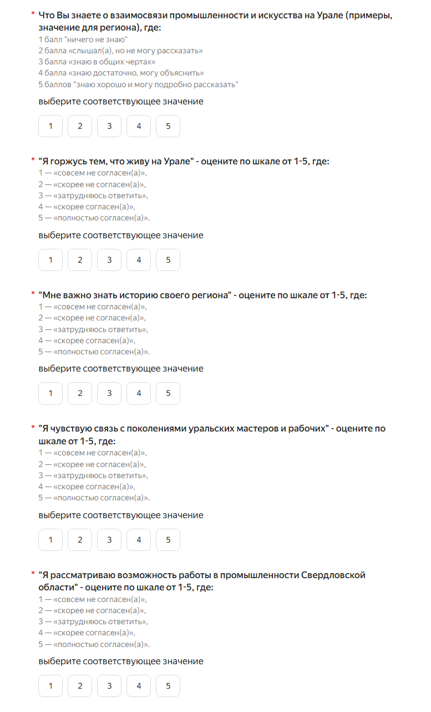
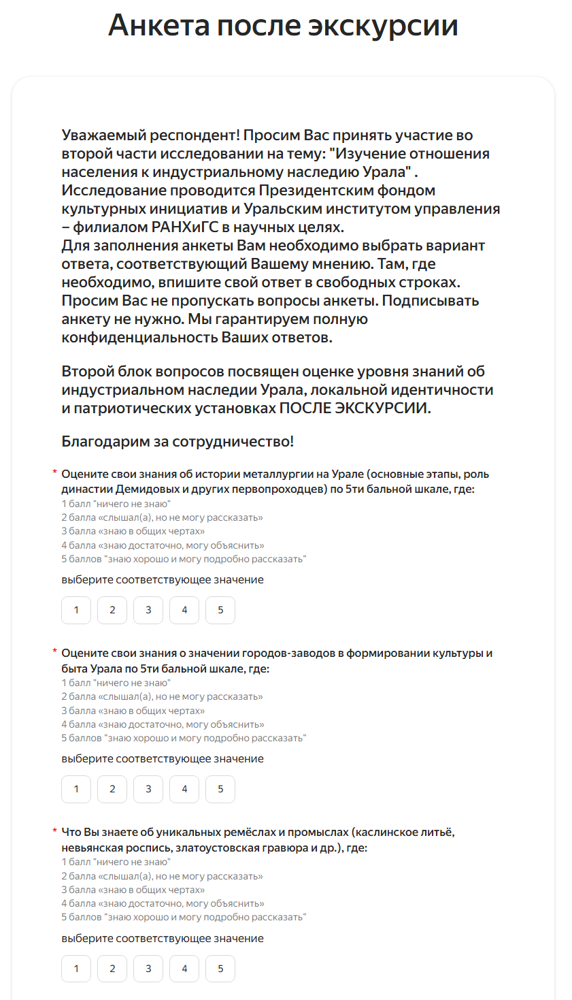
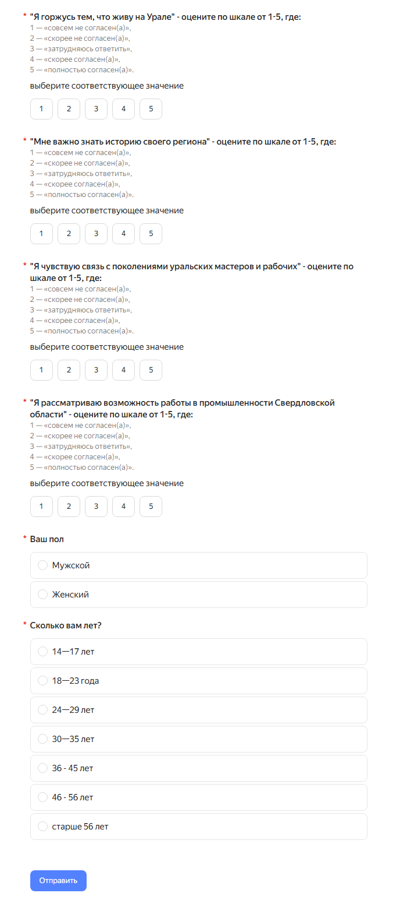
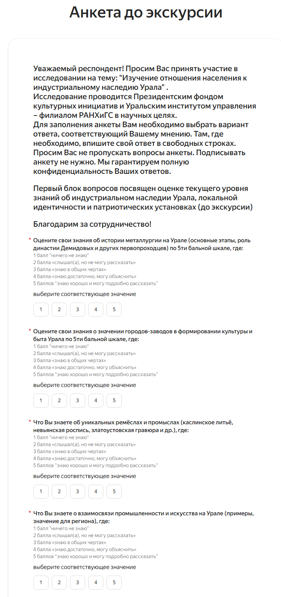
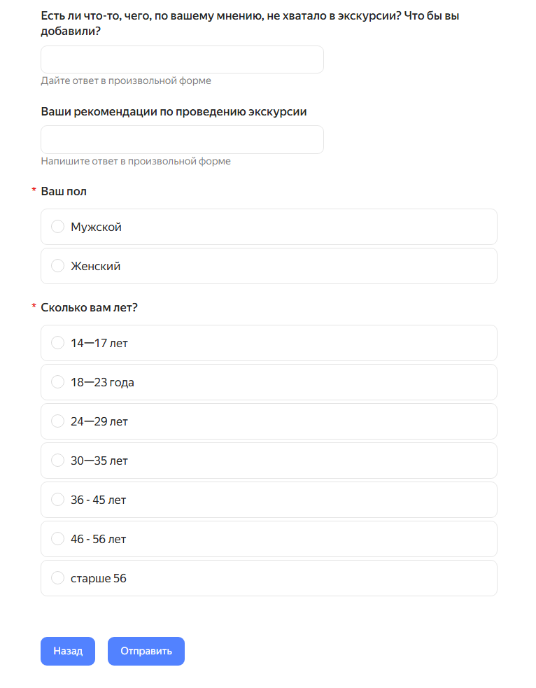

Проект направлен на сохранение и популяризацию культурно-исторического наследия Свердловской области — территорий с уникальным индустриальным прошлым, незаслуженно забытым даже местными жителями.
14–25
Целевой возраст
3
Городских округа
28/39
До / после экскурсии
+51 п.п.
Рост знаний участников
1.1.Грантовая заявка
ПФКИ-25-2-000949
Тип проекта: Межотраслевые, сетевые культурные и кросскультурные проекты.
Тематическое направление: «Место силы» — проекты, раскрывающие многообразие и самобытность регионов страны, демонстрирующие лучшие примеры преображения территорий через реализацию креативных идей. Малая родина, локальная идентичность — источник вдохновения и творчества в современной России.
Название: «Железное кольцо Урала».
Описание и уникальность проекта
Культурно-просветительский проект «Железное кольцо Урала» продолжает идею успешного и востребованного проекта «Изумрудное кольцо Урала», привлекающего большое внимание не только жителей Уральского федерального округа, но и всей России.
Проект направлен на сохранение и популяризацию культурно-исторического наследия Свердловской области — территорий Первоуральского, Шалинского и Нижнетагильского городских округов. Эти промышленные районы с давних времён выступают центром формирования особого локального культурно-исторического феномена — индустриальной культуры Урала.
Большая часть локаций проекта незаслуженно забыта — их историческое и культурное значение неизвестно даже местным жителям. При этом самая главная проблема состоит в том, что эти населённые пункты не рассматриваются в общем контексте культурно-исторического развития региона, включая развитие ремёсел, промыслов, культуры.
Уникальность: реализация проекта позволит создать единую, гармоничную, целостную культурно-историческую картину данной территории.
Традиционные ценности проекта
«Историческая память и преемственность поколений» и «Созидательный труд» (Указ Президента РФ № 809).
Эксперты проекта
Неклюдов Е. Г.
Аверина Л. Н.
Петров Б. С.
Партнёры
Колледжи Свердловской области.
Музеи (в т. ч. Свердловский областной краеведческий музей).
Территориальные управления городских округов.
Промышленные предприятия региона.
1.2.Сайт проекта

Главная страница — интерактивная карта маршрутов

Города Свердловской области: Шаля, Невьянск, Нижний Тагил, Первоуральск
Объект оценки: культурно-просветительский проект «Железное кольцо Урала», реализуемый ООО «АиФ Урал» в 2025–2026 годах в Первоуральском, Шалинском и Нижнетагильском городских округах Свердловской области.
Цель оценки
Определить, насколько эффективно проект достигает заявленных целей:
сохранение и популяризация индустриального культурного наследия Урала;
вовлечение молодёжи 14–25 лет в изучение локальной истории;
укрепление локальной идентичности и патриотических установок;
создание устойчивого краеведческого и туристического продукта.
Предмет оценки
Реализация календарного плана, достижение количественных и качественных результатов.
Качество созданного контента и цифровой платформы.
Степень вовлечённости целевых групп.
Социокультурное воздействие: изменения в знаниях, ценностях и поведении участников.
2.2.Принципы вовлечения заинтересованных сторон
Группа
Уровень вовлечения
Молодёжь 14–25 лет, жители УрФО
Анкеты, фокус-группы
Эксперты проекта
Рецензирование контента, экспертные интервью
Партнёры (колледжи, музеи, управления)
Интервью о координации и потенциале продолжения
Команда проекта
Рефлексивные сессии, внутренние отчёты
Грантодатель (ПФКИ)
Отчётность по ключевым показателям
Для системного участия создаётся оценочный комитет из 2–3 ключевых партнёров и 1 независимого эксперта в области культуры. Совещания — в начале, середине и конце реализации проекта.
2.3.Ключевые оценочные вопросы
Вопросы соответствия и релевантности
Насколько проект соответствует актуальным социокультурным потребностям региона (сохранение наследия, противодействие оттоку молодёжи, кадровый дефицит)?
Соответствуют ли цели и задачи проекта его концепции и аудитории?
Вопросы реализации
Реализованы ли мероприятия в срок и в полном объёме согласно календарному плану?
Насколько эффективно выстроено взаимодействие с партнёрами и экспертами?
Достигнуты ли заявленные количественные показатели?
Вопросы воздействия
Как оценивают проект эксперты в области сохранения индустриального наследия?
Как изменились знания, установки и поведение молодых участников?
Насколько удалось актуализировать индустриальное наследие Урала с помощью форматов проекта?
Вопросы устойчивости
Есть ли подтверждённые планы продолжения или масштабирования идей («Медное», «Жемчужное» кольца)?
Как изменилось отношение местных жителей и туристов к индустриальному наследию?
Какие образовательные и медиаартефакты созданы? Используются ли они?
3.Инструменты исследования
3.1.Анкета для участников экскурсий (до и после)
Ниже — скриншоты реальных онлайн-анкет Google Forms, использованных в исследовании. Нажмите для просмотра в полном размере.

Анкета после экскурсии — блок оценки качества

Блок знаний об индустриальном наследии

Блок идентичности и патриотических установок

Карьерная мотивация и открытые вопросы

Дополнительные вопросы анкеты

Завершение анкеты
Цель инструмента
Оценить краткосрочное влияние экскурсии на уровень знаний, эмоциональное восприятие и локальную идентичность молодёжи в возрасте 14–25 лет.
Формат: цифровая анкета (Google Forms или аналог), время заполнения — не более 7 минут. Заполняется дважды: за 15 минут до начала («до») и сразу после окончания («после»).
Блок А. Знания об индустриальном наследии Урала (шкала 1–5)
А1. История металлургии на Урале (основные этапы, роль династии Демидовых).
А2. Значение городов-заводов в формировании культуры и быта Урала.
А4. Взаимосвязь промышленности и искусства на Урале.
Шкала: 1 — «ничего не знаю», 5 — «знаю хорошо и могу подробно рассказать».
Блок Б. Локальная идентичность и патриотические установки (шкала 1–5)
Б1. Я горжусь тем, что живу на Урале.
Б2. Мне важно знать историю своего региона.
Б3. Я чувствую связь с поколениями уральских мастеров и рабочих.
Б4. Я рассматриваю возможность работы в промышленности Свердловской области.
Шкала: 1 — «совсем не согласен(а)», 5 — «полностью согласен(а)».
Блок В. Оценка экскурсии (только после, шкала 1–5)
В1. Ясность и логичность повествования гида.
В2. Эмоциональная вовлечённость (насколько было интересно, вдохновляюще).
В3. Качество визуальных материалов (фото, видео, экспонаты).
В4. Возможность задавать вопросы и получать развёрнутые ответы.
Блок Г. Открытые вопросы (только после)
Г1. Какой момент экскурсии произвёл на вас наибольшее впечатление? Почему?
Г2. Что из услышанного или увиденного заставило вас по-новому взглянуть на Урал, его историю или на вашу будущую профессию?
Г3. Есть ли что-то, чего, по вашему мнению, не хватало в экскурсии? Что бы вы добавили?
Анализ данных: сравнение средних баллов по каждому пункту «до» и «после» с использованием парного t-критерия или непараметрического аналога при малом объёме выборки. Тематический анализ открытых ответов с кодированием по категориям: «Гордость за регион», «Преемственность поколений», «Интерес к профессии в промышленности», «Эмоциональный отклик», «Дефицит знаний».
Примечание для несовершеннолетних (14–17 лет): требуется письменное согласие родителя или опекуна. Участие добровольное и анонимное.
3.2.Гид для проведения фокус-группы с молодёжью
Параметры
Участники
6–8 человек, 14–25 лет (желательно участники экскурсий)
Продолжительность
60–75 минут
Модератор
Независимый специалист (не является членом команды проекта)
Формат
Очный (колледж, библиотека) или онлайн (Zoom / Яндекс.Телемост)
Запись
Аудио с согласия участников, расшифровка в течение 3 дней
Цель: глубоко изучить, как проект формирует представления молодёжи об «уральской идентичности», «ценности труда», «связи прошлого и будущего».
3.3.Бланк интервью с экспертами и организаторами
Цель интервью
Получить качественные рефлексивные данные о содержании проекта, его эффективности, произошедших изменениях и потенциале устойчивого развития.
Тематическая релевантность и ценностное наполнение
Как вы оцениваете соответствие проведённых мероприятий теме «Культурный код» и традиционной ценности «Историческая память и преемственность поколений»?
Личностные и социальные эффекты
Какие, по вашему мнению, наиболее значимые изменения произошли с участниками — молодёжью и местными жителями — в результате участия в проекте?
Гражданская активность и мультипликативный эффект
Были ли зафиксированы случаи, когда участники после завершения проекта инициировали собственные просветительские, волонтёрские или туристические инициативы? Можете привести примеры?
Институциональные эффекты
Как проект повлиял на взаимодействие между партнёрами — музеями, образовательными учреждениями, органами власти, НКО? Укрепились ли эти связи?
Устойчивость и масштабирование
Есть ли подтверждённые планы по продолжению или масштабированию идей проекта (например, «Медное», «Жемчужное» кольца)? Какие шаги уже предприняты?
Рефлексия и передаваемый опыт
Если бы вы могли повторить этот проект, что бы вы изменили? Какие рекомендации вы бы дали тем, кто захочет реализовать подобную инициативу?
4.Результаты исследования
4.1.Опрос до экскурсии (N = 128)
Важно: данные получены в ходе опроса до проведения экскурсии. Они отражают исходный уровень знаний и установок молодёжи. Сравнительный опрос «после» позволит зафиксировать прирост.
Блок А. Уровень знаний об индустриальном наследии Урала (шкала 1–5)
История металлургии Урала
2.4
Значение городов-заводов
2.5
Ремёсла и промыслы (каслинское литьё, невьянская роспись)
2.6
Взаимосвязь промышленности и искусства
2.7
Низкий базовый уровень знаний (2,4–2,7 из 5). Вывод: экскурсия должна начинаться с фундаментальных понятий.
Блок Б. Локальная идентичность и установки (шкала 1–5)
Я горжусь тем, что живу на Урале
4.2
Мне важно знать историю своего региона
4.5
Я чувствую связь с поколениями мастеров
3.7
Рассматриваю работу в промышленности области
2.1
Высокий уровень (4+)
Средний уровень (3–4)
Низкий уровень (менее 3)
Высокая эмоциональная привязанность к региону (4,2–4,5) при низком карьерном интересе к промышленности (2,1). N = 128 человек.
Сравнение двух кластеров показателей
Средний балл: Блок знаний
2.55
Средний балл: Идентичность и гордость
4.35
Карьерная мотивация в промышленности
2.1
Разрыв между эмоциональной привязанностью к региону и фактическими знаниями об его истории — 1,8 балла. Это ключевая точка роста для проекта.
4.2.Ключевые выводы
Вывод 1. Молодёжь демонстрирует высокую эмоциональную привязанность к Уральскому региону (4,2–4,5/5), что создаёт сильный мотивационный фундамент для образовательного воздействия.
Вывод 2. Уровень фактических знаний об индустриальном наследии Урала критически низкий (2,4–2,7/5) — даже у жителей региона. Это подтверждает актуальность и значимость проекта.
Вывод 3. Карьерная мотивация к работе в промышленности региона крайне низкая (2,1/5). Это указывает на системную проблему оттока молодёжи, которую проект призван частично решить через популяризацию «созидательного труда» как ценности.
Вывод 4. Стратегия «эмоциональный крючок → знание → профессиональный интерес» является оптимальной для данной аудитории. Начинать с гордости, переходить к фактам, завершать профориентацией.
4.3.Рекомендации для организаторов экскурсий
Низкий базовый уровень знаний → экскурсия должна начинаться с фундаментальных понятий, без предположения о предварительной осведомлённости.
Высокая мотивация к изучению истории → делать акцент на нарратив, личные истории мастеров, эмоциональную вовлечённость.
Низкий интерес к карьере в промышленности → показывать современные, технологичные и творческие аспекты отрасли. Приглашать молодых специалистов.
Молодая аудитория → использовать интерактивные форматы, визуальный контент, цифровые инструменты и дополненную реальность.
Долгосрочные рекомендации
Разработать программу масштабирования: «Медное кольцо», «Жемчужное кольцо» по другим территориям Урала.
Создать цифровую платформу с интерактивными картами индустриального наследия.
Включить маршруты в туристические агрегаторы (Russpass, региональный портал туризма).
Разработать программу профориентации на базе маршрутов совместно с колледжами и предприятиями-партнёрами.
4.1.1.Диаграммы опросов «до» и «после» экскурсии
Диаграммы построены на основе данных из отчётов 8 и 9. Вопросы 1–8 идентичны в обоих опросах, что позволяет проследить динамику.
Вопрос 1: История металлургии на Урале
Вопрос 2: Значение городов-заводов
Вопрос 3: Ремёсла и промыслы Урала
Вопрос 4: Промышленность и искусство
Вопрос 5: Я горжусь, что живу на Урале
Вопрос 6: Мне важно знать историю региона
Вопрос 7: Связь с уральскими мастерами
Вопрос 8: Работа в промышленности СО
Вопрос 1: История металлургии на Урале
Вопрос 2: Значение городов-заводов
Вопрос 3: Ремёсла и промыслы Урала
Вопрос 4: Промышленность и искусство
Вопрос 5: Я горжусь, что живу на Урале
Вопрос 6: Мне важно знать историю региона
Вопрос 7: Связь с уральскими мастерами
Вопрос 8: Работа в промышленности СО
Вопрос 9: Ясность повествования гида
Вопрос 10: Эмоциональная вовлечённость
Вопрос 11: Качество визуальных материалов
Вопрос 12: Возможность задавать вопросы
4.2.Опрос после экскурсии — динамика знаний и идентичности (N = 139)
Проведено два замера: анкета «до экскурсии» (28 участников) и анкета «после экскурсии» (39 участников). Вопросы 1–8 идентичны — это позволяет отследить реальные изменения в знаниях и установках молодёжи в возрасте 14–25 лет.
Блок знаний: доля высоких оценок (4–5 баллов) до и после экскурсии
История металлургии на Урале
до
17%
после
60%
+43 п.п.
Значение городов-заводов в культуре Урала
до
14%
после
57%
+43 п.п.
Уникальные ремёсла и промыслы Урала
до
10%
после
54%
+44 п.п.
Взаимосвязь промышленности и искусства
до
8%
после
51%
+43 п.п.
Доля «не знающих» (1–2 балла) сократилась с 33–54% до 13–19%. Доля высоких оценок выросла в 3–7 раз по всем тематическим блокам.
Блок идентичности: доля согласных (4–5 баллов) до и после
Гордость за Урал
до
75%
после
89%
+14 п.п.
Важность знания истории региона
до
71%
после
81%
+10 п.п.
Чувство связи с мастерами и рабочими Урала
до
25%
после
38%
+13 п.п.
Интерес к работе в промышленности
до
17%
после
19%
+2 п.п.
Региональная гордость и интерес к истории укрепились. Карьерный интерес в промышленности остался низким — требуется отдельный профориентационный модуль.
Качество проведения экскурсии — оценки участников (шкала 1–5)
4,49
/5,0
Качество визуальных материалов (фото, видео, экспонаты)
4,5+
/5,0
Ясность и логичность повествования гида
4,4+
/5,0
Эмоциональная вовлечённость и интерес
3,8
/5,0
Возможность задавать вопросы (12,8% оценили на «2»)
Оценка визуального контента (4,49/5) — главный актив проекта, заслуживающий тиражирования в других форматах.
4.2.1.Ключевые выводы по динамике
Образовательный эффект подтверждён. До экскурсии лишь 8–17% оценивали свои знания как высокие. После — 51–60%. Прирост: +35…+51 процентный пункт по всем четырём тематическим блокам.
Эмоциональная вовлечённость сохранилась и укрепилась. Высокие показатели идентичности (гордость, интерес к истории) и до и после экскурсии — это «эмоциональный фундамент», на который проект опирается грамотно.
Карьерный интерес не вырос. До и после — около 60% категорически не рассматривают работу в промышленности. Требуется отдельный профориентационный модуль с историями успеха молодых специалистов.
Нарратив о преемственности работает. Рост показателя «Связь с мастерами» (+13 п.п.) свидетельствует о востребованности темы преемственности поколений — её следует усилить.
4.3.Мнения студентов о видеоматериале «Железное кольцо Урала»
Студенты, принявшие участие в просмотре видеоэкскурсий по городам Урала (Невьянск, Чусовая, Висим, Кунара и другие), написали аналитические эссе. Ниже представлены ключевые тезисы из их работ — прямые свидетельства образовательного воздействия видеоматериала.
«Невьянск показан в фильме не просто как старинный уральский город, а как место, где история продолжает жить в настоящем. Особенно сильное впечатление производит Невьянская башня — главный символ города. Сегодня ею восхищаются жители и туристы, но прежде чем стать известным памятником, она была создана руками мастеров. Поэтому башня — это не только часть исторической памяти, но и настоящий результат созидательного труда.»
Ржанникова Софья · «Невьянск в проекте «Железное кольцо Урала»»
«Аудиовизуальные материалы помогают не просто услышать факты, но и увидеть природу, архитектуру, музеи, старинные заводы, плотины, пристани и другие памятные места. Такие видео создают эффект присутствия и делают исторический материал более наглядным. В проектах о Чусовой и Староуткинске хорошо видно, как через реку, старые пристани, заводы Демидовых и местные музеи раскрывается связь между прошлым и настоящим.»
Чулкова Анастасия · «Видеоэкскурсия по Уралу»
«Экскурсия играет важную роль в обеспечении преемственности поколений — она позволяет не просто передавать знания, но делать это наглядно, эмоционально и глубоко осмысленно. Через рассказы экскурсоводов участники получают возможность увидеть связь времён и почувствовать её личную значимость. В результате укрепляется осознание собственной ответственности за сохранение культурного наследия.»
Хайруллина Александра · «Экскурсия и преемственность поколений»
«Возможность просмотра экскурсии напрямую содействует сохранению исторической памяти: ведь любой человек, не покидая своего дома, способен перенестись на Урал, прикоснуться к его самобытному укладу и узнать, как жили местные жители. Подобные экскурсии служат надёжным мостом для передачи знаний из поколения в поколение. Даже когда люди покидают родные края, они всё равно могут показать своим детям частицу исконной культуры.»
Байрамукова Карина · «Видео как инструмент сохранения памяти»
«Видеоэкскурсии по городам Урала благотворно влияют на историческую память и преемственность поколений. Они ярко оживляют образы демидовских заводов, военного подвига, храмов и старинных улиц, превращая сухие факты в эмоциональное переживание. Одновременно такие видео легко объединяют семью у экрана: старшие делятся воспоминаниями, молодые задают вопросы. Так цифровой формат укрепляет связь поколений.»
Тимофеева Екатерина · «Видео и связь поколений»
4.3.1.Обобщение мнений
Что студенты отмечают как сильные стороны видеоматериала
Создание «эффекта присутствия» — визуальные образы дополняют и оживляют фактическую информацию.
Доступность: знакомство с наследием без необходимости физически посещать место.
Объединяющий эффект — видео вовлекает разные поколения.
Нарратив о преемственности: связь прошлого и настоящего через судьбы людей и мест.
Ограничения, которые видят студенты
Видео не может передать полную глубину исторических событий из-за ограниченного хронометража.
Живая экскурсия производит более сильное впечатление, чем видеоформат.
Необходимо дополнение интерактивными форматами для повышения вовлечённости.